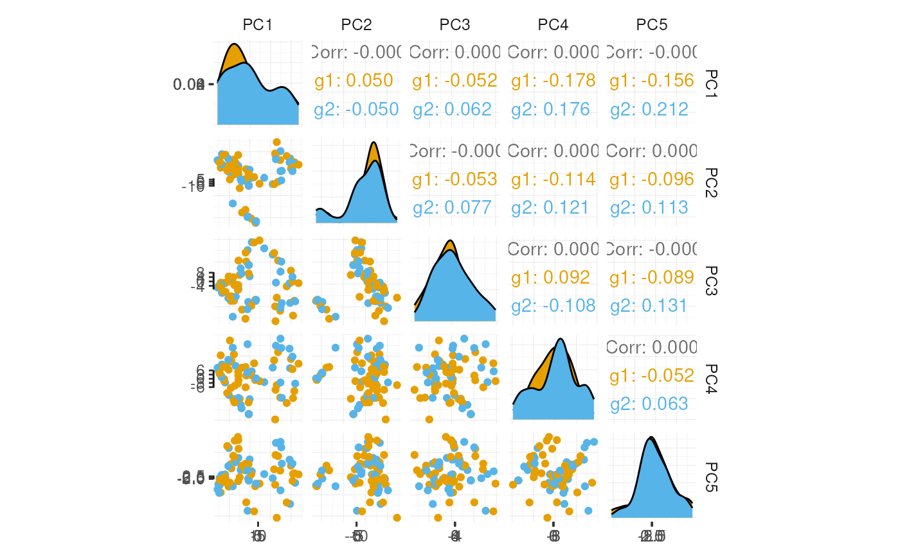

Overview of the tidySCE package
Stefano Mangiola
2020-09-07
introduction.RmdIntroduction
tidySCE provides a bridge between Bioconductor single-cell packages (Amezquita et al. 2019) and the tidyverse (Wickham et al. 2019). It creates an invisible layer that enables viewing the Bioconductor SingleCellExperiment object as a tidyverse tibble, and provides SingleCellExperiment-compatible dplyr, tidyr, ggplot and plotly functions. This allows users to get the best of both Bioconductor and tidyverse worlds.
Functions/utilities available
| SingleCellExperiment-compatible Functions | Description |
|---|---|
all |
After all tidySCE is a SingleCellExperiment object, just better |
| tidyverse Packages | Description |
|---|---|
dplyr |
All dplyr tibble functions (e.g. tidySCE::select) |
tidyr |
All tidyr tibble functions (e.g. tidySCE::pivot_longer) |
ggplot2 |
ggplot (tidySCE::ggplot) |
plotly |
plot_ly (tidySCE::plot_ly) |
| Utilities | Description |
|---|---|
tidy |
Add tidySCE invisible layer over a SingleCellExperiment object |
as_tibble |
Convert cell-wise information to a tbl_df
|
join_transcripts |
Add transcript-wise information, returns a tbl_df
|
Installation
if (!requireNamespace("BiocManager", quietly=TRUE)) install.packages("BiocManager") BiocManager::install("tidySCE")
Load libraries used in this vignette.
Create tidySCE, the best of both worlds!
This is a SingleCellExperiment object but it is evaluated as a tibble. So it is compatible both with SingleCellExperiment and tidyverse.
pbmc_small_tidy <- tidySCE::pbmc_small %>% tidy()
It looks like a tibble
pbmc_small_tidy## # A tibble: 80 x 17
## cell orig.ident nCount_RNA nFeature_RNA RNA_snn_res.0.8 letter.idents groups
## <chr> <fct> <dbl> <int> <fct> <fct> <chr>
## 1 ATGC… SeuratPro… 70 47 0 A g2
## 2 CATG… SeuratPro… 85 52 0 A g1
## 3 GAAC… SeuratPro… 87 50 1 B g2
## 4 TGAC… SeuratPro… 127 56 0 A g2
## 5 AGTC… SeuratPro… 173 53 0 A g2
## 6 TCTG… SeuratPro… 70 48 0 A g1
## 7 TGGT… SeuratPro… 64 36 0 A g1
## 8 GCAG… SeuratPro… 72 45 0 A g1
## 9 GATA… SeuratPro… 52 36 0 A g1
## 10 AATG… SeuratPro… 100 41 0 A g1
## # … with 70 more rows, and 10 more variables: RNA_snn_res.1 <fct>, file <chr>,
## # ident <fct>, PC_1 <dbl>, PC_2 <dbl>, PC_3 <dbl>, PC_4 <dbl>, PC_5 <dbl>,
## # tSNE_1 <dbl>, tSNE_2 <dbl>But it is a SingleCellExperiment object after all
pbmc_small_tidy@assays
## An object of class "SimpleAssays"
## Slot "data":
## List of length 2
## names(2): counts logcountsAnnotation polishing
We may have a column that contains the directory each run was taken from, such as the “file” column in pbmc_small_tidy.
pbmc_small_tidy$file[1:5]
## [1] "../data/sample2/outs/filtered_feature_bc_matrix/"
## [2] "../data/sample1/outs/filtered_feature_bc_matrix/"
## [3] "../data/sample2/outs/filtered_feature_bc_matrix/"
## [4] "../data/sample2/outs/filtered_feature_bc_matrix/"
## [5] "../data/sample2/outs/filtered_feature_bc_matrix/"We may want to extract the run/sample name out of it into a separate column. Tidyverse extract can be used to convert a character column into multiple columns using regular expression groups.
# Create sample column pbmc_small_polished <- pbmc_small_tidy %>% extract(file, "sample", "../data/([a-z0-9]+)/outs.+", remove=FALSE) # Reorder to have sample column up front pbmc_small_polished %>% select(sample, everything())
## # A tibble: 80 x 18
## cell sample orig.ident nCount_RNA nFeature_RNA RNA_snn_res.0.8 letter.idents
## <chr> <chr> <fct> <dbl> <int> <fct> <fct>
## 1 ATGC… sampl… SeuratPro… 70 47 0 A
## 2 CATG… sampl… SeuratPro… 85 52 0 A
## 3 GAAC… sampl… SeuratPro… 87 50 1 B
## 4 TGAC… sampl… SeuratPro… 127 56 0 A
## 5 AGTC… sampl… SeuratPro… 173 53 0 A
## 6 TCTG… sampl… SeuratPro… 70 48 0 A
## 7 TGGT… sampl… SeuratPro… 64 36 0 A
## 8 GCAG… sampl… SeuratPro… 72 45 0 A
## 9 GATA… sampl… SeuratPro… 52 36 0 A
## 10 AATG… sampl… SeuratPro… 100 41 0 A
## # … with 70 more rows, and 11 more variables: groups <chr>,
## # RNA_snn_res.1 <fct>, file <chr>, ident <fct>, PC_1 <dbl>, PC_2 <dbl>,
## # PC_3 <dbl>, PC_4 <dbl>, PC_5 <dbl>, tSNE_1 <dbl>, tSNE_2 <dbl>Preliminary plots
Set colours and theme for plots.
# Use colourblind-friendly colours friendly_cols <- dittoSeq::dittoColors() # Set theme my_theme <- list( scale_fill_manual(values=friendly_cols), scale_color_manual(values=friendly_cols), theme_bw() + theme( panel.border=element_blank(), axis.line=element_line(), panel.grid.major=element_line(size=0.2), panel.grid.minor=element_line(size=0.1), text=element_text(size=12), legend.position="bottom", aspect.ratio=1, strip.background=element_blank(), axis.title.x=element_text(margin=margin(t=10, r=10, b=10, l=10)), axis.title.y=element_text(margin=margin(t=10, r=10, b=10, l=10)) ) )
We can treat pbmc_small_polished as a tibble for plotting.
Here we plot number of transcripts per cell.
pbmc_small_polished %>% tidySCE::ggplot(aes(nFeature_RNA, fill=groups)) + geom_histogram() + my_theme

Here we plot total transcripts per cell.
pbmc_small_polished %>% tidySCE::ggplot(aes(groups, nCount_RNA, fill=groups)) + geom_boxplot(outlier.shape=NA) + geom_jitter(width=0.1) + my_theme

Here we plot abundance of two transcripts for each group.
pbmc_small_polished %>% join_transcripts(transcripts=c("HLA-DRA", "LYZ")) %>% ggplot(aes(groups, abundance_counts + 1, fill=groups)) + geom_boxplot(outlier.shape=NA) + geom_jitter(aes(size=nCount_RNA), alpha=0.5, width=0.2) + scale_y_log10() + my_theme

Preprocess the dataset
We can also treat pbmc_small_polished as a SingleCellExperiment object and proceed with data processing with Bioconductor packages, such as scran (Lun, Bach, and Marioni 2016) and scater (McCarthy et al. 2017).
# Identify variable genes with scran variable_genes <- pbmc_small_polished %>% modelGeneVar() %>% getTopHVGs(prop=0.1) # Perform PCA with scater pbmc_small_pca <- pbmc_small_polished %>% runPCA(subset_row=variable_genes) pbmc_small_pca
## # A tibble: 80 x 18
## cell orig.ident nCount_RNA nFeature_RNA RNA_snn_res.0.8 letter.idents groups
## <chr> <fct> <dbl> <int> <fct> <fct> <chr>
## 1 ATGC… SeuratPro… 70 47 0 A g2
## 2 CATG… SeuratPro… 85 52 0 A g1
## 3 GAAC… SeuratPro… 87 50 1 B g2
## 4 TGAC… SeuratPro… 127 56 0 A g2
## 5 AGTC… SeuratPro… 173 53 0 A g2
## 6 TCTG… SeuratPro… 70 48 0 A g1
## 7 TGGT… SeuratPro… 64 36 0 A g1
## 8 GCAG… SeuratPro… 72 45 0 A g1
## 9 GATA… SeuratPro… 52 36 0 A g1
## 10 AATG… SeuratPro… 100 41 0 A g1
## # … with 70 more rows, and 11 more variables: RNA_snn_res.1 <fct>, file <chr>,
## # sample <chr>, ident <fct>, PC1 <dbl>, PC2 <dbl>, PC3 <dbl>, PC4 <dbl>,
## # PC5 <dbl>, tSNE_1 <dbl>, tSNE_2 <dbl>If a tidyverse-compatible package is not included in the tidySCE collection, we can use as_tibble to permanently convert tidySCE into a tibble.
# Create pairs plot with GGally pbmc_small_pca %>% as_tibble() %>% select(contains("PC"), everything()) %>% GGally::ggpairs(columns=1:5, ggplot2::aes(colour=groups)) + my_theme

Identify clusters
We can proceed with cluster identification with scran.
pbmc_small_cluster <- pbmc_small_pca # Assign clusters to the 'colLabels' of the SummarizedExperiment object colLabels(pbmc_small_cluster) <- pbmc_small_pca %>% buildSNNGraph(use.dimred="PCA") %>% igraph::cluster_walktrap() %$% membership %>% as.factor() # Reorder columns pbmc_small_cluster %>% select(label, everything())
## # A tibble: 80 x 19
## cell label orig.ident nCount_RNA nFeature_RNA RNA_snn_res.0.8 letter.idents
## <chr> <fct> <fct> <dbl> <int> <fct> <fct>
## 1 ATGC… 2 SeuratPro… 70 47 0 A
## 2 CATG… 2 SeuratPro… 85 52 0 A
## 3 GAAC… 2 SeuratPro… 87 50 1 B
## 4 TGAC… 1 SeuratPro… 127 56 0 A
## 5 AGTC… 2 SeuratPro… 173 53 0 A
## 6 TCTG… 2 SeuratPro… 70 48 0 A
## 7 TGGT… 1 SeuratPro… 64 36 0 A
## 8 GCAG… 2 SeuratPro… 72 45 0 A
## 9 GATA… 2 SeuratPro… 52 36 0 A
## 10 AATG… 2 SeuratPro… 100 41 0 A
## # … with 70 more rows, and 12 more variables: groups <chr>,
## # RNA_snn_res.1 <fct>, file <chr>, sample <chr>, ident <fct>, PC1 <dbl>,
## # PC2 <dbl>, PC3 <dbl>, PC4 <dbl>, PC5 <dbl>, tSNE_1 <dbl>, tSNE_2 <dbl>And interrogate the output as if it was a regular tibble.
# Count number of cells for each cluster per group pbmc_small_cluster %>% tidySCE::count(groups, label)
## # A tibble: 8 x 3
## groups label n
## <chr> <fct> <int>
## 1 g1 1 12
## 2 g1 2 14
## 3 g1 3 14
## 4 g1 4 4
## 5 g2 1 10
## 6 g2 2 11
## 7 g2 3 10
## 8 g2 4 5We can identify and visualise cluster markers combining SingleCellExperiment, tidyverse functions and tidyHeatmap (Mangiola and Papenfuss 2020)
# Identify top 10 markers per cluster marker_genes <- pbmc_small_cluster %>% findMarkers(groups=pbmc_small_cluster$label) %>% as.list() %>% map(~ .x %>% head(10) %>% rownames()) %>% unlist() # Plot heatmap pbmc_small_cluster %>% join_transcripts(transcripts=marker_genes) %>% group_by(label) %>% heatmap(transcript, cell, abundance_counts, .scale="column")

Reduce dimensions
We can calculate the first 3 UMAP dimensions using the SingleCellExperiment framework and scater.
pbmc_small_UMAP <- pbmc_small_cluster %>% runUMAP(ncomponents=3)
And we can plot the result in 3D using plotly.
pbmc_small_UMAP %>% plot_ly( x=~`UMAP1`, y=~`UMAP2`, z=~`UMAP3`, color=~label, colors=friendly_cols[1:4] )
#
Cell type prediction
We can infer cell type identities using SingleR (Aran et al. 2019) and manipulate the output using tidyverse.
# Get cell type reference data blueprint <- celldex::BlueprintEncodeData() # Infer cell identities cell_type_df <- pbmc_small_UMAP@assays@data$logcounts %>% Matrix::Matrix(sparse=TRUE) %>% SingleR( ref=blueprint, labels=blueprint$label.main ) %>% as.data.frame() %>% as_tibble(rownames="cell") %>% select(cell, first.labels) # Join UMAP and cell type info pbmc_small_cell_type <- pbmc_small_UMAP %>% left_join(cell_type_df, by="cell") # Reorder columns pbmc_small_cell_type %>% tidySCE::select(cell, first.labels, everything())
## # A tibble: 80 x 23
## cell first.labels orig.ident nCount_RNA nFeature_RNA RNA_snn_res.0.8
## <chr> <chr> <fct> <dbl> <int> <fct>
## 1 ATGC… CD4+ T-cells SeuratPro… 70 47 0
## 2 CATG… CD8+ T-cells SeuratPro… 85 52 0
## 3 GAAC… CD8+ T-cells SeuratPro… 87 50 1
## 4 TGAC… CD4+ T-cells SeuratPro… 127 56 0
## 5 AGTC… CD4+ T-cells SeuratPro… 173 53 0
## 6 TCTG… CD4+ T-cells SeuratPro… 70 48 0
## 7 TGGT… CD4+ T-cells SeuratPro… 64 36 0
## 8 GCAG… CD4+ T-cells SeuratPro… 72 45 0
## 9 GATA… CD8+ T-cells SeuratPro… 52 36 0
## 10 AATG… CD4+ T-cells SeuratPro… 100 41 0
## # … with 70 more rows, and 17 more variables: letter.idents <fct>,
## # groups <chr>, RNA_snn_res.1 <fct>, file <chr>, sample <chr>, ident <fct>,
## # label <fct>, PC1 <dbl>, PC2 <dbl>, PC3 <dbl>, PC4 <dbl>, PC5 <dbl>,
## # tSNE_1 <dbl>, tSNE_2 <dbl>, UMAP1 <dbl>, UMAP2 <dbl>, UMAP3 <dbl>We can easily summarise the results. For example, we can see how cell type classification overlaps with cluster classification.
# Count number of cells for each cell type per cluster pbmc_small_cell_type %>% count(label, first.labels)
## # A tibble: 9 x 3
## label first.labels n
## <fct> <chr> <int>
## 1 1 CD4+ T-cells 2
## 2 1 CD8+ T-cells 8
## 3 1 NK cells 12
## 4 2 B-cells 10
## 5 2 CD4+ T-cells 5
## 6 2 CD8+ T-cells 3
## 7 2 Monocytes 7
## 8 3 Monocytes 24
## 9 4 Erythrocytes 9We can easily reshape the data for building information-rich faceted plots.
pbmc_small_cell_type %>% # Reshape and add classifier column pivot_longer( cols=c(label, first.labels), names_to="classifier", values_to="label" ) %>% # UMAP plots for cell type and cluster ggplot(aes(UMAP1, UMAP2, color=label)) + geom_point() + facet_wrap(~classifier) + my_theme

We can easily plot gene correlation per cell category, adding multi-layer annotations.
pbmc_small_cell_type %>% # Add some mitochondrial abundance values mutate(mitochondrial=rnorm(dplyr::n())) %>% # Plot correlation join_transcripts(transcripts=c("CST3", "LYZ"), shape="wide") %>% ggplot(aes(CST3 + 1, LYZ + 1, color=groups, size=mitochondrial)) + geom_point() + facet_wrap(~first.labels, scales="free") + scale_x_log10() + scale_y_log10() + my_theme

Nested analyses
A powerful tool we can use with tidySCE is tidyverse nest. We can easily perform independent analyses on subsets of the dataset. First we classify cell types into lymphoid and myeloid, and then nest based on the new classification.
pbmc_small_nested <- pbmc_small_cell_type %>% filter(first.labels != "Erythrocytes") %>% mutate(cell_class=dplyr::if_else(`first.labels` %in% c("Macrophages", "Monocytes"), "myeloid", "lymphoid")) %>% nest(data=-cell_class) pbmc_small_nested
## # A tibble: 2 x 2
## cell_class data
## <chr> <list>
## 1 lymphoid <tidySCE>
## 2 myeloid <tidySCE>Now we can independently for the lymphoid and myeloid subsets (i) find variable features, (ii) reduce dimensions, and (iii) cluster using both tidyverse and SingleCellExperiment seamlessly.
pbmc_small_nested_reanalysed <- pbmc_small_nested %>% mutate(data=map( data, ~ { .x <- runPCA(.x, subset_row=variable_genes) variable_genes <- .x %>% modelGeneVar() %>% getTopHVGs(prop=0.3) colLabels(.x) <- .x %>% buildSNNGraph(use.dimred="PCA") %>% igraph::cluster_walktrap() %$% membership %>% as.factor() .x %>% runUMAP(ncomponents=3) } )) pbmc_small_nested_reanalysed
## # A tibble: 2 x 2
## cell_class data
## <chr> <list>
## 1 lymphoid <tidySCE>
## 2 myeloid <tidySCE>We can then unnest and plot the new classification.
pbmc_small_nested_reanalysed %>% # Convert to tibble otherwise SingleCellExperiment drops reduced dimensions when unifying data sets. mutate(data=map(data, ~ .x %>% as_tibble())) %>% unnest(data) %>% # Define unique clusters unite("cluster", c(cell_class, label), remove=FALSE) %>% # Plotting ggplot(aes(UMAP1, UMAP2, color=cluster)) + geom_point() + facet_wrap(~cell_class) + my_theme
We can perform a large number of functional analyses on data subsets. For example, we can identify intra-sample cell-cell interactions using SingleCellSignalR (Cabello-Aguilar et al. 2020), and then compare whether interactions are stronger or weaker across conditions. The code below demonstrates how this analysis could be performed. It won’t work with this small example dataset as we have just two samples (one for each condition). But some example output is shown below and you can imagine how you can use tidyverse on the output to perform t-tests and visualisation.
pbmc_small_nested_interactions <- pbmc_small_nested_reanalysed %>% # Unnest based on cell category unnest(data) %>% # Create unambiguous clusters mutate(integrated_clusters=first.labels %>% as.factor() %>% as.integer()) %>% # Nest based on sample tidySCE::nest(data=-sample) %>% tidySCE::mutate(interactions=map(data, ~ { # Produce variables. Yuck! cluster <- .x@colData$integrated_clusters data <- data.frame(.x@assays@data %>% as.list() %>% .[[1]] %>% as.matrix()) # Ligand/Receptor analysis using SingleCellSignalR data %>% cell_signaling(genes=rownames(data), cluster=cluster) %>% inter_network(data=data, signal=., genes=rownames(data), cluster=cluster) %$% `individual-networks` %>% map_dfr(~ bind_rows(as_tibble(.x))) })) pbmc_small_nested_interactions %>% select(-data) %>% unnest(interactions)
If the dataset was not so small, and interactions could be identified, you would see something like below.
tidySCE::pbmc_small_nested_interactions
## # A tibble: 100 x 9
## sample ligand receptor ligand.name receptor.name origin destination
## <chr> <chr> <chr> <chr> <chr> <chr> <chr>
## 1 sampl… clust… cluster… PTMA VIPR1 clust… cluster 2
## 2 sampl… clust… cluster… B2M KLRD1 clust… cluster 2
## 3 sampl… clust… cluster… IL16 CD4 clust… cluster 2
## 4 sampl… clust… cluster… HLA-B KLRD1 clust… cluster 2
## 5 sampl… clust… cluster… CALM1 VIPR1 clust… cluster 2
## 6 sampl… clust… cluster… HLA-E KLRD1 clust… cluster 2
## 7 sampl… clust… cluster… GNAS VIPR1 clust… cluster 2
## 8 sampl… clust… cluster… B2M HFE clust… cluster 2
## 9 sampl… clust… cluster… PTMA VIPR1 clust… cluster 3
## 10 sampl… clust… cluster… CALM1 VIPR1 clust… cluster 3
## # … with 90 more rows, and 2 more variables: interaction.type <chr>,
## # LRscore <dbl>Session Info
## R version 4.0.2 Patched (2020-09-02 r79126)
## Platform: x86_64-pc-linux-gnu (64-bit)
## Running under: Ubuntu 20.04.1 LTS
##
## Matrix products: default
## BLAS/LAPACK: /usr/lib/x86_64-linux-gnu/openblas-openmp/libopenblasp-r0.3.8.so
##
## locale:
## [1] LC_CTYPE=en_US.UTF-8 LC_NUMERIC=C
## [3] LC_TIME=en_US.UTF-8 LC_COLLATE=en_US.UTF-8
## [5] LC_MONETARY=en_US.UTF-8 LC_MESSAGES=C
## [7] LC_PAPER=en_US.UTF-8 LC_NAME=C
## [9] LC_ADDRESS=C LC_TELEPHONE=C
## [11] LC_MEASUREMENT=en_US.UTF-8 LC_IDENTIFICATION=C
##
## attached base packages:
## [1] parallel stats4 stats graphics grDevices utils datasets
## [8] methods base
##
## other attached packages:
## [1] celldex_0.99.1 tidySCE_0.99.0
## [3] tidyHeatmap_1.1.4 purrr_0.3.4
## [5] SingleCellSignalR_1.1.0 SingleR_1.3.8
## [7] scran_1.17.16 scater_1.17.4
## [9] ggplot2_3.3.2 SingleCellExperiment_1.11.6
## [11] SummarizedExperiment_1.19.6 DelayedArray_0.15.7
## [13] matrixStats_0.56.0 Matrix_1.2-18
## [15] Biobase_2.49.1 GenomicRanges_1.41.6
## [17] GenomeInfoDb_1.25.11 IRanges_2.23.10
## [19] S4Vectors_0.27.12 BiocGenerics_0.35.4
## [21] knitr_1.29 BiocStyle_2.17.0
##
## loaded via a namespace (and not attached):
## [1] backports_1.1.9 circlize_0.4.10
## [3] AnnotationHub_2.21.5 BiocFileCache_1.13.1
## [5] systemfonts_0.3.0 plyr_1.8.6
## [7] igraph_1.2.5 splines_4.0.2
## [9] BiocParallel_1.23.2 digest_0.6.25
## [11] foreach_1.5.0 htmltools_0.5.0
## [13] viridis_0.5.1 gdata_2.18.0
## [15] fansi_0.4.1 magrittr_1.5
## [17] memoise_1.1.0 cluster_2.1.0
## [19] limma_3.45.13 ComplexHeatmap_2.5.5
## [21] pkgdown_1.5.1.9000 colorspace_1.4-1
## [23] rappdirs_0.3.1 blob_1.2.1
## [25] ggrepel_0.8.2 xfun_0.16
## [27] dplyr_1.0.2 crayon_1.3.4
## [29] RCurl_1.98-1.2 survival_3.2-3
## [31] iterators_1.0.12 glue_1.4.2
## [33] gtable_0.3.0 zlibbioc_1.35.0
## [35] XVector_0.29.3 SIMLR_1.15.0
## [37] GetoptLong_1.0.2 BiocSingular_1.5.0
## [39] shape_1.4.4 scales_1.1.1
## [41] pheatmap_1.0.12 DBI_1.1.0
## [43] GGally_2.0.0 cpp11_0.2.1
## [45] edgeR_3.31.4 Rcpp_1.0.5
## [47] xtable_1.8-4 viridisLite_0.3.0
## [49] clue_0.3-57 dqrng_0.2.1
## [51] bit_4.0.4 rsvd_1.0.3
## [53] httr_1.4.2 dittoSeq_1.1.7
## [55] FNN_1.1.3 gplots_3.0.4
## [57] RColorBrewer_1.1-2 ellipsis_0.3.1
## [59] pkgconfig_2.0.3 reshape_0.8.8
## [61] farver_2.0.3 scuttle_0.99.12
## [63] dbplyr_1.4.4 uwot_0.1.8
## [65] locfit_1.5-9.4 utf8_1.1.4
## [67] later_1.1.0.1 tidyselect_1.1.0
## [69] labeling_0.3 rlang_0.4.7
## [71] AnnotationDbi_1.51.3 BiocVersion_3.12.0
## [73] munsell_0.5.0 tools_4.0.2
## [75] cli_2.0.2 ExperimentHub_1.15.3
## [77] RSQLite_2.2.0 generics_0.0.2
## [79] ggridges_0.5.2 fastmap_1.0.1
## [81] evaluate_0.14 stringr_1.4.0
## [83] yaml_2.2.1 ragg_0.3.1
## [85] bit64_4.0.5 fs_1.5.0
## [87] caTools_1.18.0 mime_0.9
## [89] pracma_2.2.9 compiler_4.0.2
## [91] interactiveDisplayBase_1.27.5 curl_4.3
## [93] beeswarm_0.2.3 png_0.1-7
## [95] tibble_3.0.3 statmod_1.4.34
## [97] stringi_1.4.6 desc_1.2.0
## [99] RSpectra_0.16-0 lattice_0.20-41
## [101] bluster_0.99.1 multtest_2.45.0
## [103] vctrs_0.3.4 pillar_1.4.6
## [105] lifecycle_0.2.0 BiocManager_1.30.10
## [107] GlobalOptions_0.1.2 RcppAnnoy_0.0.16
## [109] BiocNeighbors_1.7.0 data.table_1.13.0
## [111] cowplot_1.0.0 bitops_1.0-6
## [113] irlba_2.3.3 httpuv_1.5.4
## [115] R6_2.4.1 promises_1.1.1
## [117] bookdown_0.20 KernSmooth_2.23-17
## [119] gridExtra_2.3 vipor_0.4.5
## [121] codetools_0.2-16 MASS_7.3-52
## [123] gtools_3.8.2 assertthat_0.2.1
## [125] rprojroot_1.3-2 rjson_0.2.20
## [127] withr_2.2.0 GenomeInfoDbData_1.2.3
## [129] grid_4.0.2 tidyr_1.1.2
## [131] rmarkdown_2.3 DelayedMatrixStats_1.11.1
## [133] Rtsne_0.15 shiny_1.5.0
## [135] ggbeeswarm_0.6.0References
Amezquita, Robert A, Aaron TL Lun, Etienne Becht, Vince J Carey, Lindsay N Carpp, Ludwig Geistlinger, Federico Martini, et al. 2019. “Orchestrating Single-Cell Analysis with Bioconductor.” Nature Methods, 1–9.
Aran, Dvir, Agnieszka P Looney, Leqian Liu, Esther Wu, Valerie Fong, Austin Hsu, Suzanna Chak, et al. 2019. “Reference-Based Analysis of Lung Single-Cell Sequencing Reveals a Transitional Profibrotic Macrophage.” Nature Immunology 20 (2): 163–72.
Cabello-Aguilar, Simon, Mélissa Alame, Fabien Kon-Sun-Tack, Caroline Fau, Matthieu Lacroix, and Jacques Colinge. 2020. “SingleCellSignalR: Inference of Intercellular Networks from Single-Cell Transcriptomics.” Nucleic Acids Research 48 (10): e55–e55.
Lun, Aaron TL, Karsten Bach, and John C Marioni. 2016. “Pooling Across Cells to Normalize Single-Cell Rna Sequencing Data with Many Zero Counts.” Genome Biology 17 (1): 75.
Mangiola, Stefano, and Anthony T Papenfuss. 2020. “TidyHeatmap: An R Package for Modular Heatmap Production Based on Tidy Principles.” Journal of Open Source Software 5 (52): 2472.
McCarthy, Davis J, Kieran R Campbell, Aaron TL Lun, and Quin F Wills. 2017. “Scater: Pre-Processing, Quality Control, Normalization and Visualization of Single-Cell Rna-Seq Data in R.” Bioinformatics 33 (8): 1179–86.
Wickham, Hadley, Mara Averick, Jennifer Bryan, Winston Chang, Lucy D’Agostino McGowan, Romain François, Garrett Grolemund, et al. 2019. “Welcome to the Tidyverse.” Journal of Open Source Software 4 (43): 1686.